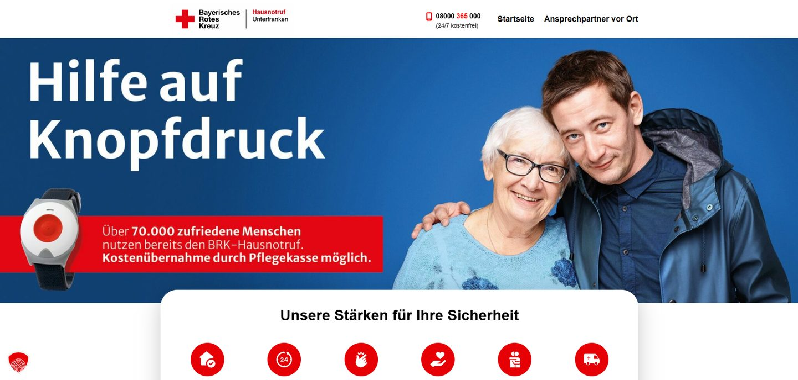

BRK Hausnotruf Unterfranken
Website für den Hausnotruf-Dienst des Bayerischen Roten Kreuzes, Zielgruppe sind ältere Menschen und deren Angehörige. Sechs Tarifpakete mussten vergleichbar dargestellt werden, ohne die Besucher zu überfordern.